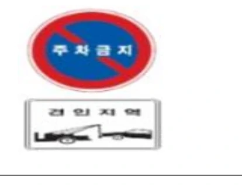

955. When will a vehicle NOT be towed under this road sign?

- ①The driver left the vehicle for 4 minutes to go to the restroom.
- ②The driver left the vehicle for 10 minutes to make a delivery.
- ③The driver stopped the vehicle and stayed in the driver's seat for 10 minutes.
- ④The driver stopped the vehicle and stayed in the driver's seat for 4 minutes.
Show answer
Answer
④ The driver stopped the vehicle and stayed in the driver's seat for 4 minutes.
Reference
Article 2 (Definition) of the Road Traffic Act: Parking refers to keeping a car in a stopped state while the driver is waiting for passengers, loading cargo, the car having broken down, or for other reasons, or leaving the car in a state where the driver cannot drive the car immediately after leaving the car. Stopping refers to a stopping state other than parking, where the driver stops the car for no more than 5 minutes. Appendix 6 of the Enforcement Rules of the Road Traffic Act, No Parking Sign (Regulatory Sign No. 219) prohibits parking of vehicles. Towing area sign (auxiliary sign No. 428)
Reference text is a machine translation for study.